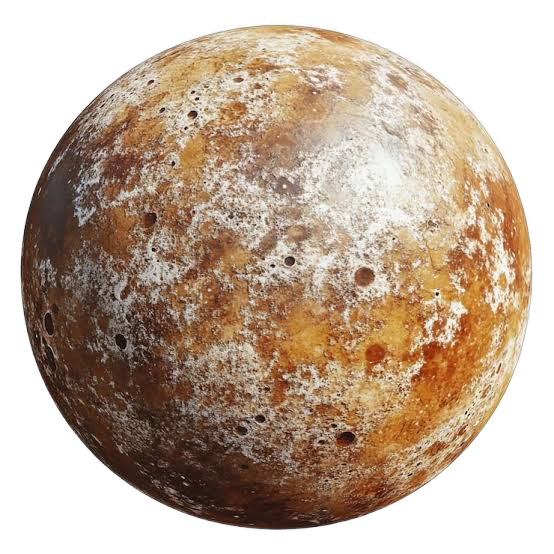
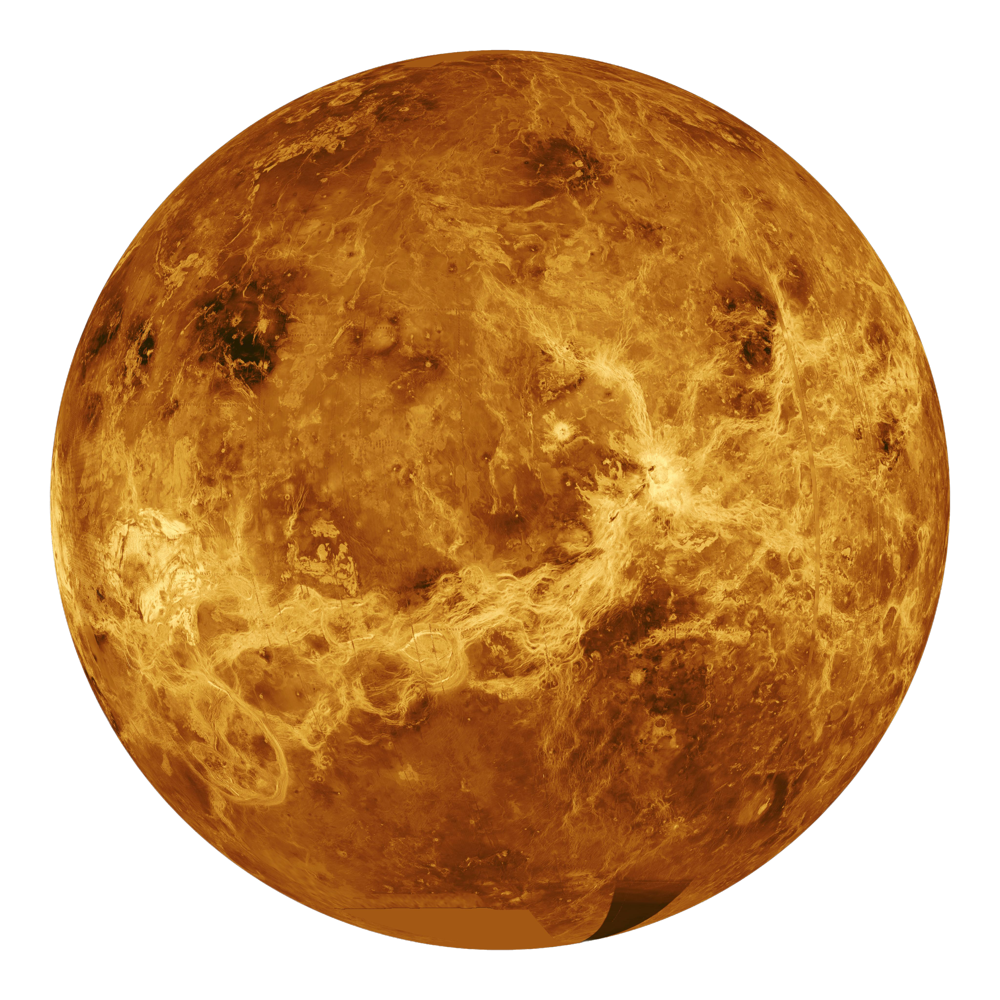
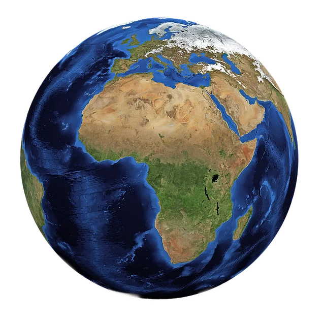
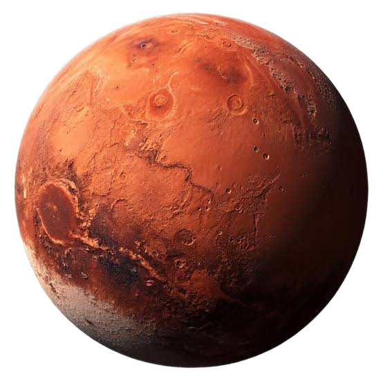
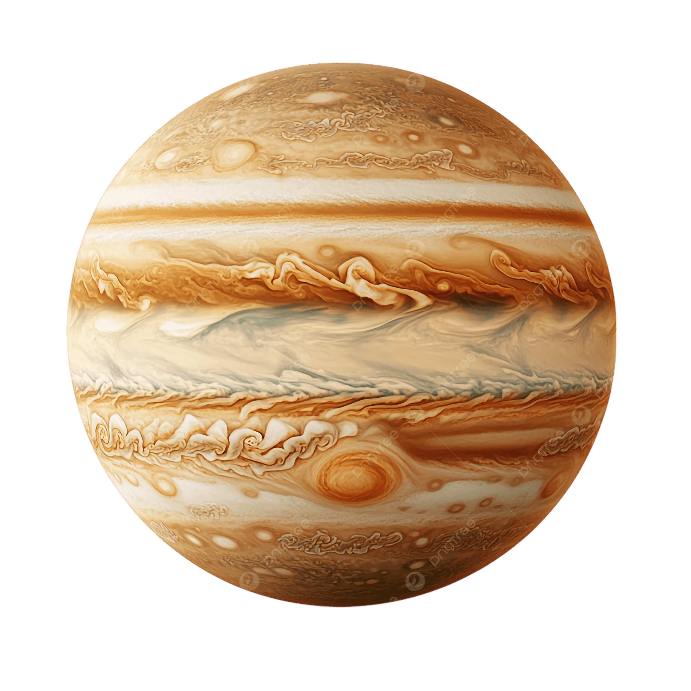
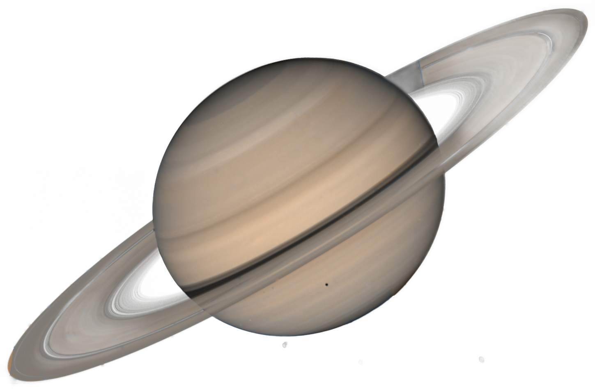
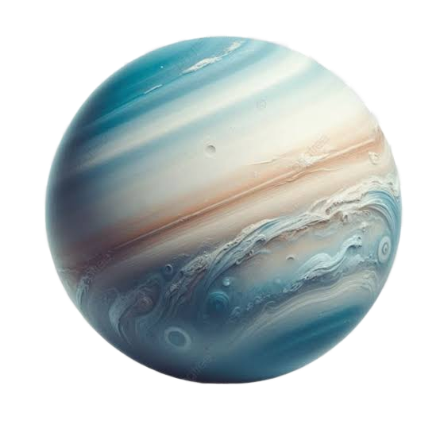
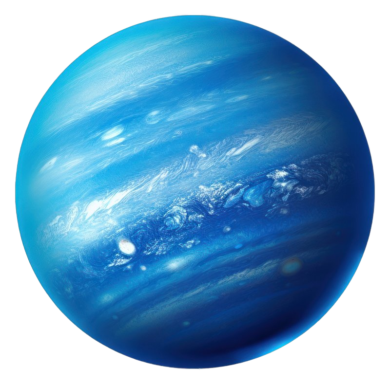
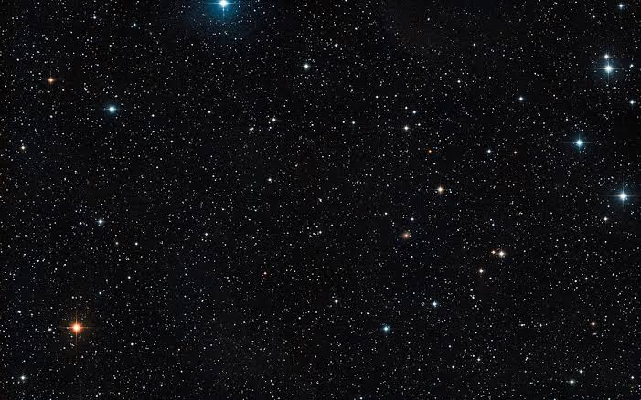
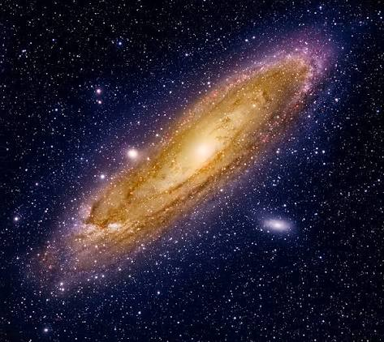

Mercurio
El planeta más cercano al Sol.
Explora los misterios del espacio y sus planetas.

El planeta más cercano al Sol.

El planeta más caliente.

El único planeta con vida conocida.

Conocido como el planeta rojo.

El planeta más grande.

Famoso por sus anillos.

Gira tumbado de lado.

El planeta más lejano.


| Planeta | Tipo |
|---|---|
| Tierra | Rocoso |
| Júpiter | Gaseoso |
| Neptuno | Helado |